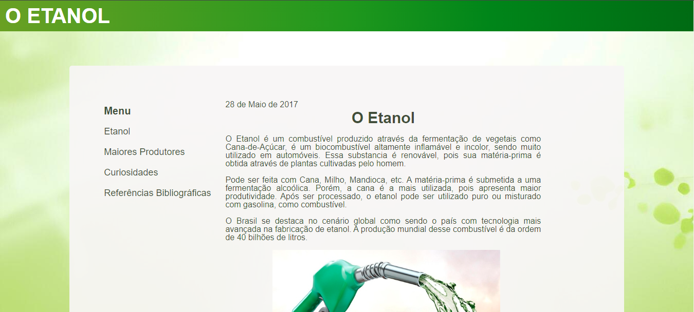
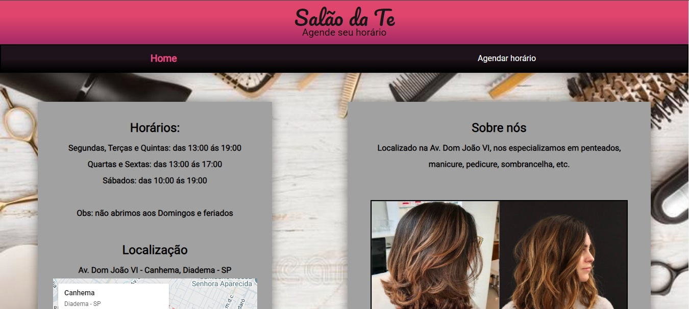
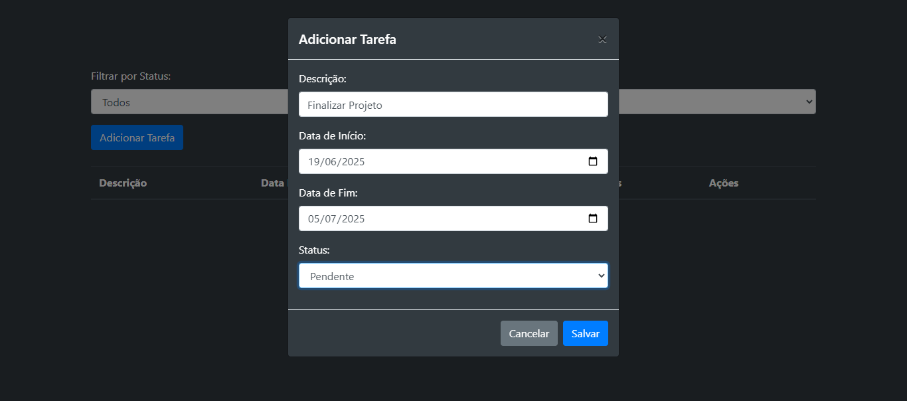

Sobre Mim:
Desenvolvedor Web com formação em Ciência da Computação e experiência prática em Front-End, utilizando Javascript e React.js. Possuo conhecimento e interesse em desenvolvimento Back-End com Python, PHP e proficiência em bancos de dados como MySQL, PostgreSQL e MariaDB. Busco aplicar minhas competências técnicas e analíticas em desafios que impulsionam o meu crescimento na área de desenvolvimento web.
Linguagens e Tecnologias que eu tenho conhecimento:

HTML5
CSS3

JavaScript

React
PHP
MySql
Abaixo vocês podem encontrar alguns de meus projetos:
Projetos Acadêmicos
APS - Etanol
Meu primeiro projeto no qual eu realizei em uma atividade prática supervisionada no 1° semestre universidade, aonde eu deveria criar uma página utilizando HTML e CSS de acordo com o tema do trabalho (no caso, Etanol), você pode encontrá-lo clicando aqui.
Projetos Pessoais
Salão da Te
Projeto de um site de salão que eu fiz para praticar, contendo 2 páginas, uma mostrando informações como endereço, horários, portfólio, etc. Enquanto outra contém uma área para agendar horários, o projeto pode ser encontrado aqui.
Conversor de Moedas
Projeto de um sistema conversor de moedas que eu fiz para praticar JavaScript, o usuário digita o valor em reais e o sistema converte para moedas como Dólar por exemplo, o projeto pode ser encontrado aqui.

Participações em Projetos
Gerenciador de Tarefas
Projeto de um gerenciador de tarefas, onde o usuário insere uma tarefa, define as datas de início e conclusão de determinada tarefa, altera seus status para pendente, executando ou concluído, o projeto pode ser encontrado aqui.
